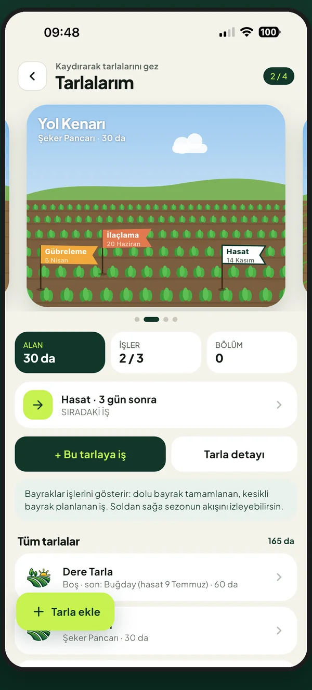
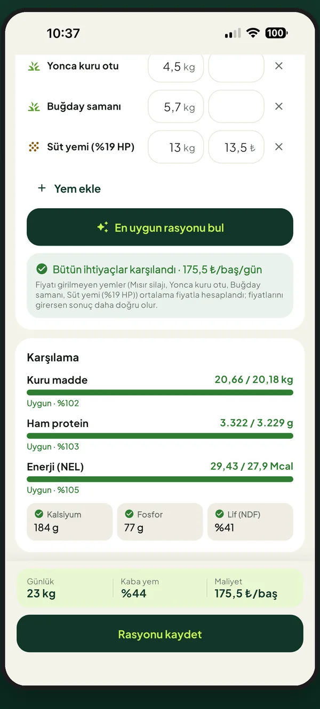
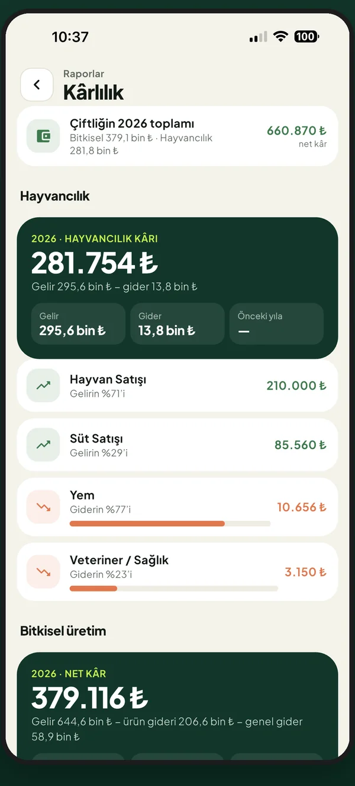

Tarla ve işler
Ekimden hasada bütün işler bir bakışta. Planlarken doz sorulmaz, yapınca gerçek miktarı girersin.
- Ekimde tohum hesabı ve taban gübresi
- Hasatta ürüne göre kalite: nem, hektolitre, polar, balya
- İlaç bekleme süresi uyarısı

Tarla, sürü, depo, silo ve para tek ajandada. Ne zaman ne yapacağını hatırlatır, sezon sonunda “bu iş bana kazandırdı mı?” sorusunu cevaplar.
Bütün çiftlik işin aynı yerde. Kayıt girdikçe stok düşer, gider yazılır, takvim güncellenir.
Ekimden hasada bütün işler bir bakışta. Planlarken doz sorulmaz, yapınca gerçek miktarı girersin.

Saat saat tahmin; ilaçlama, gübre, sulama ve hasat için uygun saatler yeşil. Don ve fırtınada bir gün önce haber.
Süt, yem, aşı, tohumlama, doğum. Yeni doğanlara bakım takvimi, et ve süt arınma uyarıları.
Depondaki yemlerle ihtiyacı en ucuza karşılayan karışım. Kuru madde, protein, enerji, lif tek ekranda.
Gübre, ilaç, tohum, yem stoğu kullandıkça düşer. Silodaki ürün parti parti, bugünkü borsa değeriyle.
TÜRİB ve il borsalarından günlük fiyatlar; USK süt tavsiye fiyatı. Ürününü ne zaman satacağına veriyle karar ver.
Gelir, gider, cari, kredi taksitleri. Hangi tarla, hangi ürün dekar başına ne kazandırdı; yıl yıl karşılaştır.
Büyük yazılar, net renkler, tek dokunuşla iş. Eldivenle bile kullanılacak kadar sade.
Rüzgâr, yağmur ve Delta-T’ye göre her saat renklenir. İşini seç, uygun saatler yeşil yansın. Planlı işinin günü hava bozacaksa tek dokunuşla uygun güne taşı.

Sağmal inek, besi, buzağı, koyun-keçi ve kuzu besisi için ihtiyaç hesaplanır; depondaki yemlerle en uygun karışım önerilir, kaç gün yeteceği söylenir.

Alımlar, işçilik, satışlar ve süt teslimi kendiliğinden finansa yazılır. Sezon sonunda ürün ürün, tarla tarla net kârını gör; 9 farklı PDF raporla paylaş.
Apple, Google ya da e-postanla saniyeler içinde hesap aç. Kart bilgisi istenmez.
Bitkisel üretim, hayvancılık ya da ikisi. Kullanmadığın bölümler hiç görünmez.
Bir tarla, bir sürü ya da depoya bir ürün. Uygulama gerisini hatırlatır.
Kayıtların yalnız senin hesabında, Avrupa Birliği’ndeki güvenli sunucularda saklanır. Başkası göremez, satılmaz, reklam için kullanılmaz.
Hayır, şu an bütün özellikleriyle ücretsiz ve reklamsız. İleride ek özellikler için isteğe bağlı bir abonelik gelirse önceden duyurulur; girdiğin kayıtlar her zaman senin kalır.
Kayıtların sunucuda saklandığı için kayıt eklerken internet gerekir. Tarlada çekmiyorsa uygulama seni uyarır; bağlantı gelince kaldığın yerden devam edersin.
İnek, manda, koyun ve keçi; tek tek küpeyle ya da sürü olarak sayıyla. Bitkisel tarafta buğday, arpa, mısır, ayçiçeği, şeker pancarı, yonca ve daha birçok ürün, Bakanlık kayıtlı ilaç ve tohum kütüphanesiyle.
Evet. Aynı hesapla girdiğin her telefonda ve tablette kayıtların aynıdır.
Android sürümü Google Play’de test aşamasında. Kısa süre içinde herkese açılacak; bu sayfadan duyuracağız.
Ücretsiz indir, ilk tarlanı ya da sürünü beş dakikada ekle.